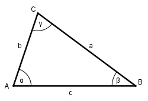

Aufgabe 139 Berechnen Sie den Winkel α, wenn a = 27 m, c = 38 m und β = 124°.

Es liegt der Fall SWS (Seite c, Winkel β, Seite a) vor. Der Fall hat dann eine eindeutige Lösung, wenn β < 180° ist. . Cosinussatz: b2 = a2 + c2 - 2 * a * c * cos β b2 = 272 + 382 - 2 * 27 * 38 * cos 124° b2 = 272 + 382 - 2 * 27 * 38 * (- 0,5591) b2 = 3 320,5 m2 | √ b = 57,6 m Sinussatz: b a ------- = ------ |*sin α sin β sin α b * sin α ---------- = a |*sin β sin β b * sin α = a * sin β | :b a * sin β 27 m * sin 124° sin α = ----------- = ----------------- = b 57,6 m 27 m * 0,829 = --------------- = 0,3886 --> α = 22,9° 57,6 m